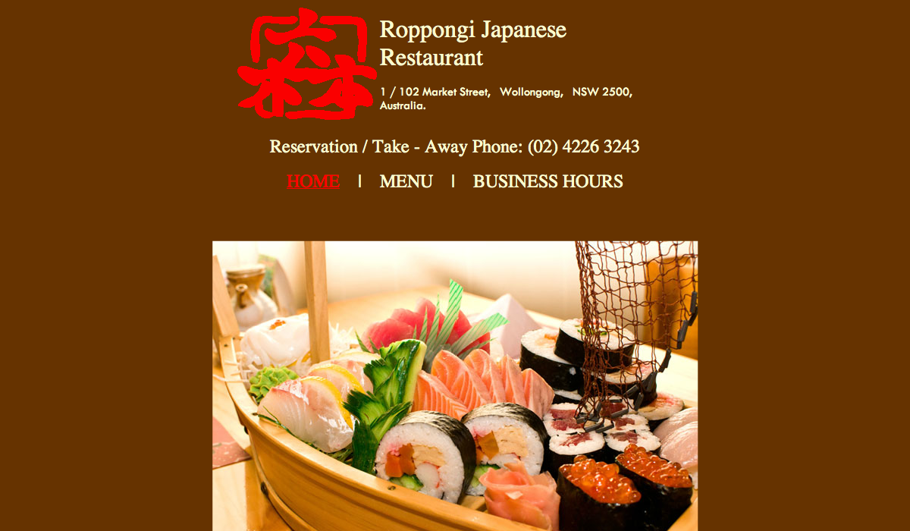

Roppongi Japanese Restaurant
While certainly not the worst restaurant site I've ever seen, Roppongi's web site could use some improvements in many places.
Apparently the designer of this web site thought it was still 2006 and as a result we get a slow, choppy flash slideshow on the site's homepage. There are worse ways this could be done, it's not a full-page unskippable intro after all.
Next up we have the colour scheme. It's a mix of baby-shit brown and a beige that's reminiscant of the Compaq computer I used back in the 90s. Add some accents of